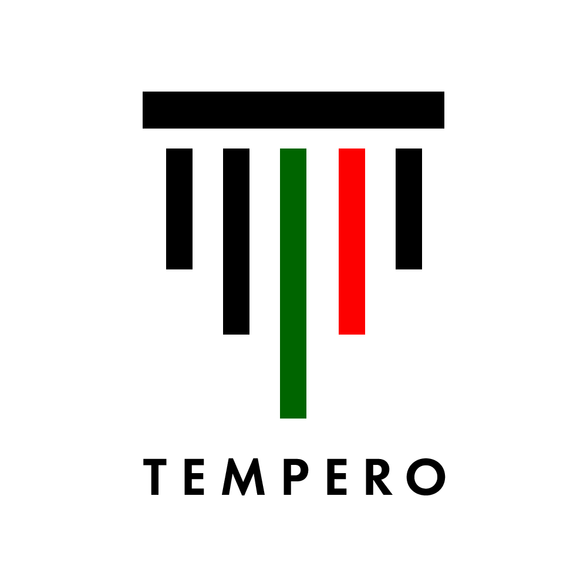

Financial Plan
This financial plan supports the Tempero business case and pilot at the Nova SBE canteen. It includes operating assumptions, revenue estimates, cost structure, and potential funding support from EU grants.
Tempero is targeting Horizon Europe as the most relevant EU grant source for this project. A Horizon Europe SME/Digital cluster grant would help fund the Nova SBE pilot, document scanning and invoice parsing development, and integration with existing hospitality systems.
| Category | Period 1 | Period 2 | Period 3 | Period 4 | Year Total |
|---|---|---|---|---|---|
| INCOME | |||||
| Subscription revenue | €300 | €300 | €3,600 | €4,800 | €9,000 |
| Pilot consulting / setup | €4,000 | €2,500 | €2,000 | €1,500 | €10,000 |
| EU grant (Horizon Europe) | €5,000 | €0 | €0 | €0 | €5,000 |
| Total income | €9,300 | €2,800 | €5,600 | €6,300 | €24,000 |
| COST OF SALES | |||||
| Hosting / cloud | €250 | €250 | €250 | €250 | €1,000 |
| Data / attendance analytics | €225 | €225 | €225 | €225 | €900 |
| Total COGS | €475 | €475 | €475 | €475 | €1,900 |
| Gross margin | €8,825 | €2,325 | €5,125 | €5,825 | €22,100 |
| OPERATING EXPENSES | |||||
| Salaries / wages | €4,000 | €4,000 | €4,000 | €4,000 | €16,000 |
| Marketing / advertising | €200 | €200 | €300 | €300 | €1,000 |
| Total operating expenses | €4,200 | €4,200 | €4,300 | €4,300 | €17,000 |
| Net operating income | €4,625 | -€1,875 | €825 | €1,525 | €5,100 |
| Income tax estimate | €0 | €0 | €0 | €0 | €0 |
| Net profit (loss) | €4,625 | -€1,875 | €825 | €1,525 | €5,100 |
Tempero will pursue a Horizon Europe grant as supplemental financing rather than primary operating revenue. This grant support is expected to cover:
If awarded, grant funding will reduce the need for early commercial revenue and accelerate product delivery. The €5,000 grant in Period 1 is incorporated into the financial model and strengthens Tempero's pitch by showing alignment with EU digital transformation goals.